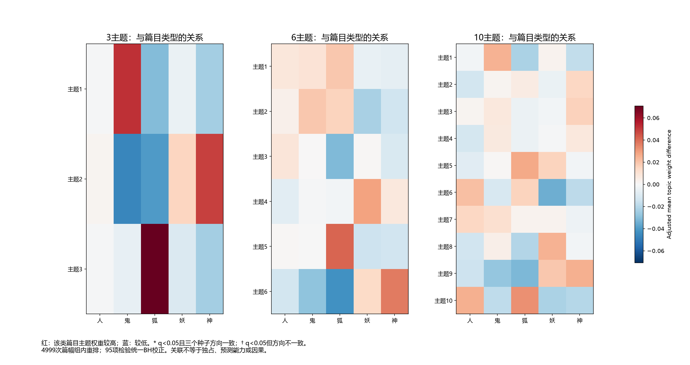

地名与空间词合并，471篇有效／原有491篇，不给模型篇目类型标签。下表比较某类篇目与其余篇目的主题权重，保留多类型标签。

关联不等于分类成功。星号含义、检验范围见图下注释。
| K | 主题 | 类型 | 该类平均 | 其他平均 | 调整差值 | p | 全局q | 三种子同向 |
|---|
主题1：家中、途中、宅、堂、山中、井、堂上、金陵、房、楼阁、逆旅、户、青州、庙、长山、闺中、寺、路侧、庐、窗
主题2：舟、墙、洞、楼、窗外、天上、洞庭、舟中、房中、门内、水中、野、旅舍、园中、中国、渡、船、南海、江南、云霄
主题3：室、门、门外、市、室中、田、榻上、床上、床下、村中、地下、墓、穴、殿、庭中、树下、壁上、宫、楼上、壁
主题1：门、家中、门外、宅、井、墓、堂上、闺中、园中、庭、内室、村、祠、邑中、厨、江南、东昌、山东、客舍、门中
主题2：榻上、室、途中、洞、殿、山中、青州、门内、斋中、窗、宫殿、南海、狱中、村舍、沂水、河南、道左、墙上、家门、寺中
主题3：田、市、堂、金陵、楼阁、逆旅、长山、路侧、济南、家、冥司、堂上、云霄、城中、余杭、晋、帘内、平阳、廊下、市井
主题4：村中、墙、门外、房、穴、树下、庭中、天上、地下、庙、窗外、室中、寺、村外、庐、树上、兰若、户、户外、园中
主题5：室、床上、室中、床下、市、楼、壁上、楼上、壁、房中、地下、阶下、野、楼下、卧室、壁间、阴司、旷野、床、太原
主题6：舟、洞庭、舟中、水中、宫、中国、船、渡、湖南、海中、镇江、西湖、江西、水面、扬州、湖中、长沙、家门、水上、窗外
主题1：家中、途中、堂、山中、堂上、逆旅、青州、路侧、庐、冥司、家门、山谷、山上、河南、城郭、东昌、帘内、廊下、山东、门中
主题2：天上、床上、壁、长山、房中、家、祠、邑中、城中、阁、狱中、宅、门内、江西、客舍、榻下、西山、穴、南院、囹圄
主题3：井、房、寺、兰若、闺中、寺中、余杭、晋、堂下、泰山、舍后、密室、洞口、章丘、都中、河上、广平、南山、僧舍、河中
主题4：庭中、洞庭、济南、湖南、云霄、长沙、幽冥、泰安、湖北、亭中、涧谷、空中、黄冈、冥府、夷陵、湖上、河、汉水、恩、博兴
主题5：墙、园中、窗外、宫、窗、斋中、楼阁、户、宫中、庭、墙外、公堂、苏州、内、院中、东村、寝室、草中、胶州、户外
主题6：田、宅、墓、楼、楼上、宫殿、村、楼下、南海、庭、桥、河间、江南、平阳、诸城、楼阁、楼舍、室内、德州、楼台
主题7：门、地下、床上、门外、野、旅舍、家中、门内、房、厨、太原、门庭、东海、村中、门前、莱芜、厅事、西堂、汾州、淄邑
主题8：金陵、殿、树下、穴、沂水、簷下、闺中、床、市井、床头、茅庐、冥间、劳山、肆中、都、洞房、真定、保定、房中、广宁
主题9：舟、洞、舟中、水中、中国、船、渡、海中、镇江、西湖、水面、扬州、水上、湖中、龙宫、广陵、江中、江岸、汉阳、舟上
主题10：室、市、门外、室中、榻上、床下、村中、壁上、庙、村外、树上、户、道左、阶下、途中、闺阁、内室、旷野、壁间、卧室